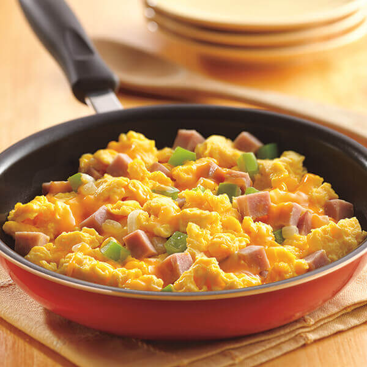

Scrambled Eggs Recipe

Description
Scrambled huevos.
Ingredients
- Whole eggs
- Egg whites
- Salt
- Pepper
- Turkey breast
- Green pepper
- Shredded cheese
- Onions
Steps
- Crack 2 whole eggs and whisk with 2 servings of egg whites
- Chop onions and green pepper. Cook until onion caramelizes.
- Add egg mix
- Season with salt and pepper
- Add chopped turkey breast
- Add shredded cheese
- Mix
- Indulge
Return Home